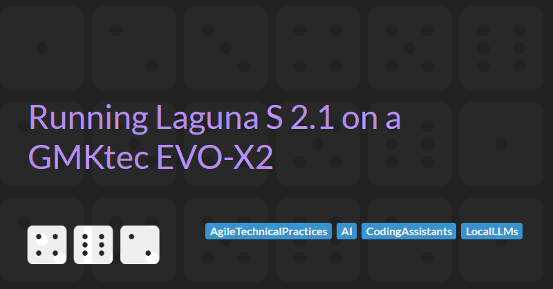

Running Laguna S 2.1 on a GMKtec EVO-X2

Most of my agentic coding runs against hosted models. That works well, but it means every prompt and every line of source code leaves the machine, every session is metered, and the whole workflow stops when the API has a bad afternoon. I wanted to know whether a small box on my desk could take some of that load.
This article walks through how I got poolside's Laguna S 2.1 running on a GMKtec EVO-X2 under Windows, served through llama-server and wired into OpenCode. It assumes you are comfortable in PowerShell and have built C++ projects before. The whole process took me an evening, most of which went on one compiler problem that I will save you from.
Why Run a Model Locally?
The case for a local model is not mainly about cost, although that helps. For me it comes down to five things:
- Privacy: Source code and prompts stay on the machine, which matters for client work.
- Availability: No rate limits, no outages, and no internet connection required.
- Experimentation: I can swap models, quantisations, context sizes and inference settings without watching a bill.
- Predictable cost: Once the hardware is paid for, inference is effectively free.
- Control: The model is just an HTTP endpoint, so I can point any tool at it and try different agentic workflows.
None of this matters if the model is too weak to be useful. Until recently, a consumer GPU with 16 GB or 24 GB of VRAM limited you to small models, and small models make poor coding agents.
Why the EVO-X2?
The EVO-X2 is built around AMD's Ryzen AI Max+ 395 ("Strix Halo"), with an integrated Radeon 8060S GPU and 128 GB of unified memory. Because the CPU and GPU share one pool of memory, ROCm on my machine exposes roughly 110 GB of it to the GPU.
That figure is the reason this experiment is possible at all. The 8060S will not compete with a high-end discrete card on raw compute, but it can hold a model that would never fit on one. In the UK the 128 GB model sells for well under £2,000, which is less than many single discrete GPUs.
Why Laguna S 2.1?
Laguna S 2.1 is poolside's agentic coding model. It is a mixture of experts model with 118B total parameters but only around 8B active for each token, and a native context window of 1M tokens. That mix suits this hardware. The full weights fit in GPU memory, and I suspect the small active parameter count should mean that generation speed should holds up as well as it does on a memory system with far less bandwidth than a discrete card.
I used the Q4_K_M quantisation. Poolside publishes official GGUF files, and bartowski has a set too.
What We Need to Do
Before getting into commands, it helps to see the shape of the whole job. Running a large language model locally needs three layers: software that lets programs use the GPU, an engine that loads the model and runs it, and a way for coding tools to talk to that engine. The nine steps below build those layers from the bottom up.
- Install the AMD HIP SDK: Programs cannot use a graphics chip for general work out of the box. ROCm is AMD's software layer that lets ordinary programs hand heavy maths to the GPU instead of the CPU, and HIP is the programming interface for it. Without ROCm, the model would run on the CPU and crawl.
- Install the Vulkan SDK: Vulkan is a second, more general route to the GPU, originally built for games. Installing the Vulkan SDK gives us a fallback and lets us compare which route is faster.
- Install the C++ toolchain and pin MSVC: We are building the engine from source code, so we need a compiler, the program that turns source code into something the computer can run. Microsoft's compiler is the standard one on Windows, and we have to ask for a slightly older version because the newest one clashes with AMD's code.
- Build ROCmFPX: ROCmFPX is the engine that runs the model. It reads the model file, loads it into GPU memory and generates text one token (roughly a fragment of a word) at a time. ROCmFPX is a version of the popular llama.cpp engine tuned for this particular AMD chip.
- Check both GPU backends: A quick sanity check that the engine can see the graphics chip through both ROCm and Vulkan, before we spend time downloading a very large file.
- Download and run the model: The model is a single file of around 90 GB. It holds the billions of numbers the network learned during training, compressed (quantised) so they fit in memory. We load the file and ask the model a question to prove it works.
- Find the right context size: Context is the model's working memory: how much text it can consider at once, such as the files in a codebase plus the conversation so far. More context costs memory and speed, so we measure where the trade-off sits.
- Serve it with llama-server: Rather than typing into the engine directly, we run it as a small web service on the machine. Any program can then send it requests over HTTP, the same way it would talk to a hosted model over the internet.
- Connect OpenCode: OpenCode is the coding agent, the tool that reads your project, decides what to change and makes the changes. We point OpenCode at the local service instead of a cloud provider.
Step 1: Install the AMD HIP SDK
ROCm on Windows ships as the AMD HIP SDK. I installed version 7.2, which officially lists the Ryzen AI Max+ 395 (gfx1151) as supported on Windows 11.
The installer sets HIP_PATH, which is worth checking before going further:
$env:HIP_PATH
# C:\Program Files\AMD\ROCm\7.2hipcc.exe, hipconfig.exe and clang++.exe should all be in the bin folder underneath it.
To confirm ROCm can see the GPU, run hipinfo. The lines that matter in my output were these:
Name: AMD Radeon(TM) 8060S Graphics
gcnArchName: gfx1151
isIntegrated: 1
totalGlobalMem: 107.87 GB
memInfo.free: 107.72 GB
ROCm was not just reporting a theoretical number. Almost all of that memory was free and available to the GPU.
Step 2: Install the Vulkan SDK
I also wanted the Vulkan backend for comparison, so I installed the LunarG Vulkan SDK. Mine landed in C:\VulkanSDK\1.4.357.0, and again the environment variable is the thing to check:
$env:VULKAN_SDK
# C:\VulkanSDK\1.4.357.0The build needs the shader compiler, so make sure glslc.exe exists in the SDK's Bin folder.
Step 3: Install the C++ toolchain, and pin MSVC
The build needs Visual Studio with the C++ workload, plus CMake and Ninja. I had Visual Studio 2026 Community installed with two MSVC toolsets side by side: 14.44 and 14.51.
This is where my evening went. The first time I compiled anything with hipcc, I got a wall of errors like this:
__device__ function 'isgreater' cannot overload
__host__ __device__ function 'isgreater'
The cause is a change in Microsoft's standard library. Newer versions of <cmath> declare isgreater and its relatives as constexpr under Clang, which makes them implicitly host and device functions, and they then clash with the device versions in ROCm's HIP headers. The problem is tracked in llama.cpp issue #22570, and the upstream fix is in LLVM rather than ROCm.
Until a HIP SDK ships with that fix, the simplest workaround is to build against an older toolset. Pinning the build to MSVC 14.44 fixed it for me. Your experience may vary: one commenter on the llama.cpp issue reports hitting the error on 14.44 as well, and the issue thread describes header shims if pinning does not work for you.
Step 4: Build ROCmFPX
The standard llama.cpp already supports AMD GPUs through ROCm and Vulkan. I chose to build ROCmFPX instead. ROCmFPX is a llama.cpp derivative tuned specifically for Strix Halo, and it adds AMD-specific quantisation formats such as Q4_0_ROCMFP4, Q6_0_ROCMFPX and Q8_0_ROCMFPX. Stock llama.cpp cannot load those formats, so if you want to try them later you need this build.
I used a PowerShell build script that does the following:
- Clones ROCmFPX.
- Locates the HIP SDK, the Vulkan SDK and Visual Studio.
- Pins MSVC to 14.44.
- Configures both the ROCm and Vulkan backends, targeting
gfx1151. - Builds
llama-cli,llama-server,llama-bench,llama-quantizeand the rest of the tools.
If you are building by hand, the settings that matter are the two backends and the GPU architecture. The equivalent CMake options look like this:
cmake -S . -B build -G Ninja `
-DGGML_HIP=ON `
-DGGML_VULKAN=ON `
-DAMDGPU_TARGETS=gfx1151 `
-DCMAKE_BUILD_TYPE=Release
cmake --build buildgfx1151 is the architecture of the Radeon 8060S. Get that wrong and everything compiles but nothing runs on the GPU.
Fixing the web UI build
My first build failed surprisingly late. All the C++ compiled successfully, but the build of the llama.cpp web UI failed on npm install, and the fallback that downloads pre-built assets from Hugging Face failed too.
Installing Node.js fixed it. Note that in PowerShell you may need to call npm.cmd rather than npm if script execution is restricted:
npm.cmd installAfter that the build completed, leaving llama-cli.exe, llama-server.exe, llama-bench.exe and llama-quantize.exe in the output folder.
Step 5: Check both GPU backends
Before downloading a large model, it is worth checking that both backends can see the GPU:
.\llama-bench.exe --list-devicesThe end of my output looked like this:
Available devices:
ROCm0: AMD Radeon(TM) 8060S Graphics (110456 MiB)
Vulkan0: AMD Radeon(TM) 8060S Graphics (114507 MiB)
About 108 GB available to ROCm. That was the point at which the EVO-X2 stopped being an interesting piece of hardware and became a usable inference machine.
Step 6: Download and run the model
The Q4_K_M GGUF I used, laguna-s-2.1-Q4_K_M.gguf, is 89.44 GB. That fits comfortably inside the 110 GB the GPU can see, with room left for the KV cache.
A quick run through llama-cli showed the model working:
Prompt: 112.4 t/s
Generation: 22.3 t/s
Later runs under different workloads came in lower, at around 34 t/s for prompt processing and 15 t/s for generation, so treat any single number with care. For interactive coding, the figure that matters most is generation speed, and somewhere around 20 tokens per second feels responsive.
Step 7: Find the right context size
Laguna S 2.1 supports a 1M token context, but supporting a context and running it at a usable speed on this machine are different things. I benchmarked a range of context sizes:
| Context | Prompt (t/s) | Generation (t/s) |
|---|---|---|
| 16K | 115.7 | 22.5 |
| 32K | 109.1 | 22.7 |
| 64K | 108.8 | 22.7 |
| 128K | 102.9 | 21.7 |
| 256K | 101.0 | 21.8 |
| 512K | 61.3 | 14.2 |
Generation speed held steady all the way to 256K and only dropped sharply at 512K. Prompt processing followed the same shape.
I settled on 256K. It is a very large working context for a coding agent, and in these runs it cost almost nothing in speed. Poolside's GGUFs also default to 262,144, and going beyond that requires YaRN rope scaling, which poolside warns may cost some quality.
Step 8: Serve it with llama-server
A model in a CLI is a toy. A model behind an API is something other tools can use. llama-server exposes an OpenAI-compatible API, so I started it with the 256K context:
.\llama-server.exe `
-m D:\models\laguna-s-2.1-Q4_K_M.gguf `
-c 262144 `
-ngl 99 `
--host 127.0.0.1 `
--port 8080On startup the server reported both devices, n_ctx = 262144, and four parallel slots sharing a unified KV cache (n_parallel = 4, kv_unified = true).
To confirm the API is up, ask it which models it is serving:
Invoke-RestMethod http://127.0.0.1:8080/v1/modelsThen send it a real request:
$body = @{
model = "laguna-s-2.1-Q4_K_M.gguf"
messages = @(
@{ role = "user"; content = "Write a Python function that reverses a string." }
)
temperature = 0.2
} | ConvertTo-Json -Depth 5
Invoke-RestMethod `
-Uri http://127.0.0.1:8080/v1/chat/completions `
-Method Post `
-ContentType "application/json" `
-Body $bodyIf that returns a sensible function, the model side is done.
Step 9: Connect OpenCode
I am using OpenCode 1.18.23 as the coding agent. OpenCode supports custom OpenAI-compatible providers through the @ai-sdk/openai-compatible package, so the local server can be registered as a provider in its own right rather than pretending to be OpenAI.
I put the configuration in an opencode.json at the root of the project I want to work on:
{
"$schema": "https://opencode.ai/config.json",
"model": "rocmfpx/laguna-s-2.1",
"provider": {
"rocmfpx": {
"npm": "@ai-sdk/openai-compatible",
"name": "ROCmFPX Local",
"options": {
"baseURL": "http://127.0.0.1:8080/v1"
},
"models": {
"laguna-s-2.1": {
"name": "Laguna S 2.1 Q4_K_M",
"limit": {
"context": 262144,
"output": 16384
}
}
}
}
}
}Three settings matter. baseURL points at the local server. The top-level model is the provider ID and model ID joined with a slash. limit.context matches the 262,144 tokens the server is actually running with, not the model's theoretical 1M. If OpenCode believes it has more context than the server provides, long sessions will fail in confusing ways.
With llama-server running, start OpenCode from the project folder and run /models. ROCmFPX Local should appear in the list. You can also select it directly:
opencode --model rocmfpx/laguna-s-2.1Testing it
Getting a response back is not the same as having a working coding agent. OpenCode depends on the model handling tool calls reliably: reading files, writing files, running commands and searching the codebase across many steps.
My first test was deliberately harmless:
Inspect this repository and tell me what the project does. Don't modify anything.
Two details from poolside's documentation are worth knowing here. Tool calling relies on the model's chat template, which llama-server now applies by default (older guides tell you to pass --jinja). Poolside also warns that dropping the model's reasoning content between turns can stop it reasoning in later agentic turns, so check how your client handles it if behaviour degrades over a long session.
The finished stack looks like this:
flowchart TD
A[OpenCode] -->|OpenAI-compatible API| B[llama-server / ROCmFPX]
B -->|ROCm or Vulkan| C[Radeon 8060S, ~110 GB]
C --> D[Laguna S 2.1 Q4_K_M]
Next Steps
The setup works. Whether it is useful is a different question, and the answer depends on how the model behaves on real work rather than on benchmarks. These are the things I plan to try next:
- OpenCode on a real codebase: Navigating an unfamiliar repository, changes across multiple files, running tests and responding to compiler errors.
- ROCm against Vulkan: The build gives me both backends, and the ROCmFPX author reports Vulkan as the faster of the two for generation.
- ROCmFPX tuning: The project includes Strix Halo specific build variants that I have not benchmarked yet.
- Speculative decoding: The server currently runs without a draft model, and poolside publishes one for Laguna, so there may be a cheap speed win available.
- Other models: 110 GB of GPU memory opens up much larger models than people associate with a mini PC.
A local model is unlikely to replace the best hosted models for me. As a private, always-available coding assistant with a 256K context, it may turn out to be more capable than I expected when I started. If you are running something similar, I would be interested to compare notes.